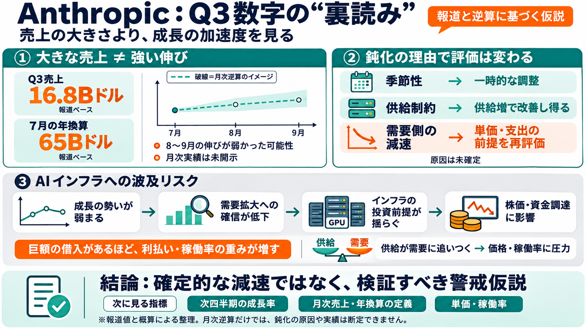

Anthropic's Q3 Revenue Growth Slows to 45%, But D.A. Davidson Says It's Not a Demand Problem | Roic News
Anthropic’s revenue growth has slowed sharply, but the sky is not falling. According to details presented at a pre-IPO i…

報道ベースのQ3売上と、そこからの“月次逆算”を使って、投資家の見方がどう変わり得るかを整理します。
生成AIの周辺では「需要が伸び続ける」という期待から、GPUデータセンター等が巨額の借入で設備投資を拡大してきました。
Q3売上は16.8Bドルと報じられ非常に大きい一方、成長の加速度（伸びの勢い）が月次に分解すると想定より弱い可能性があります。
7月に年換算で65Bドルだったという別情報があると、Q3着地が“そこから大きく跳ねない”限り、8月・9月は伸びが控えめになった推定が立ちます。
AIインフラの“バブルが弾ける典型”は、供給（GPU/クラウド能力）が需要に追いつき始め、価格や稼働率に圧力がかかる局面です。
成長鈍化が起きると、AIサービス全体の需要拡大ストーリーが一時的に揺らぎ、その結果neocloud（計算基盤）関連にも波及し得る、という連鎖です。
鈍化の原因がどれかで見通しが変わります。本文は(1)季節性、(2)需要はあるが供給が追いつかない、(3)AI支出の伸び自体が鈍る（代替モデル等）を挙げます。
数字の絶対値だけでなく「成長の加速度」が焦点になります。鈍化が一時要因なら耐えやすく、構造要因なら再評価が進みやすいです。
調達済みの巨額借入がある企業は、売上成長が鈍ると利払い・保有コストの負担が相対的に重くなり、株価や資金調達に影響が波及し得ます。
この論点は「悪い数字」かどうかより、「成長の質（加速度）」と「推定の限界」にあります。
本文は、Q3の派手な数字の裏に「成長の勢いの鈍化」を置き、借入・金利負担という実務にも結びつけています。
この仮説を「もっともらしい」から「確か」に近づけるには、次の一次情報が鍵です。
Anthropic’s revenue growth has slowed sharply, but the sky is not falling. According to details presented at a pre-IPO i…
| 2026 quarter | Revenue | Increase from prior quarter | Quarter-on-quarter growth | --- --- | | January–March | $4.7 …
The planned IPO, which The Information says is set for November before Thanksgiving, will be the biggest test yet of inv…
The artificial intelligence developer disclosed the figures during presentations to investors at its San Francisco headq…
## FINANCING COSTS At an investor meeting on October 14, Anthropic told prospective IPO investors that its third-quar…